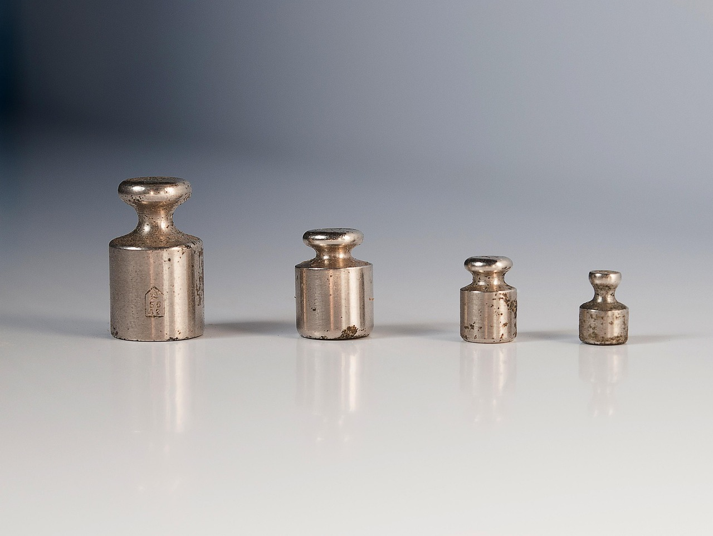
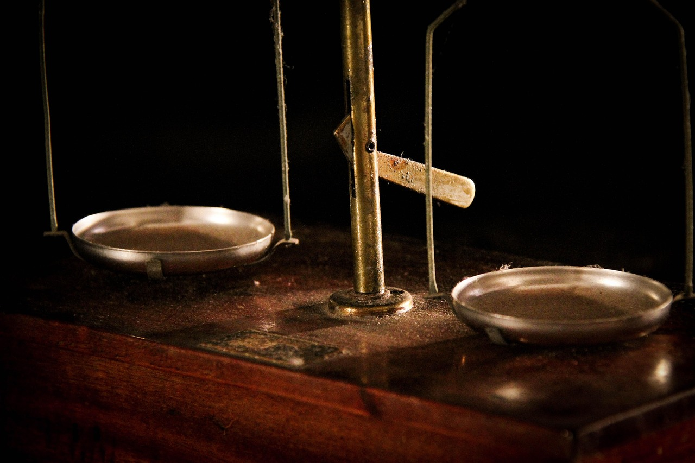
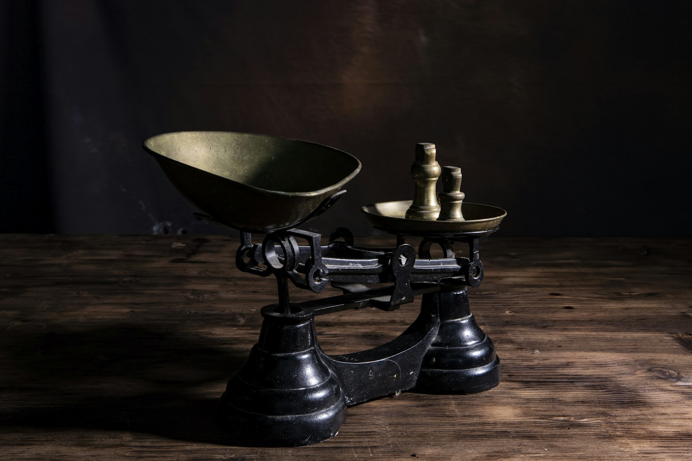
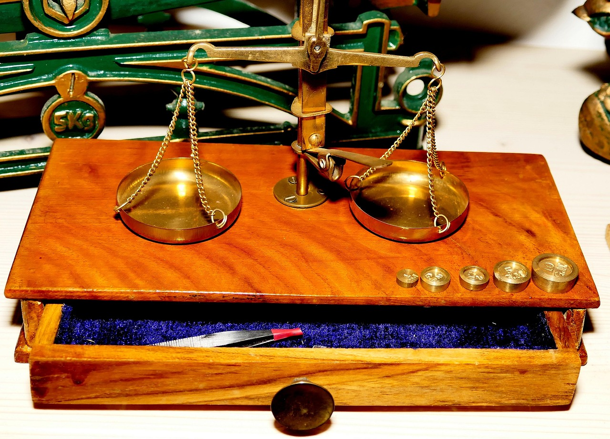

검정 종류
검정은 다섯 가지로 나눠 받습니다. 저울을 가져오는 검정과 직원이 찾아가는 출장 검정이 있습니다.
정기 검정
- 대상
- 상거래용 · 의료용 · 공방 저울
- 소요
- 3~5일
- 구분
- 가져오기
- 수수료 기준
- 종류 · 용량 구간별 1대 기준

출장 검정
- 대상
- 옮기기 어려운 저울 · 6대 이상 단체
- 소요
- 당일 (시험) · 성적서 3일
- 구분
- 출장
- 수수료 기준
- 1대 기준 + 출장비(기본 + 거리)

수리 후 검정
- 대상
- 수리 · 부품 교체 · 봉인 훼손 저울
- 소요
- 5~7일
- 구분
- 가져오기
- 수수료 기준
- 정기 검정과 같음 · 봉인 재부착 포함

분동 검정
- 대상
- E2 · F1 · F2 · M1 분동
- 소요
- 7~10일
- 구분
- 가져오기
- 수수료 기준
- 분동 한 개당 4,000원

계근대 검정
- 대상
- 바닥형 차량 저울 3 t 이상
- 소요
- 당일 (시험) · 성적서 5일
- 구분
- 출장
- 수수료 기준
- 1대 기준 + 출장비 · 기준 분동 차량 동행
검정 순서
- 01접수방문 또는 출장 예약 후 접수번호 발급
- 02외관 확인봉인 · 명판 · 수평기 · 영점 확인
- 03시험기준 분동으로 3~5개 점 측정
- 04판정허용 편차 안이면 합격 · 봉인
- 05반출합격 표지 부착 후 돌려드림